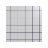
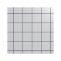
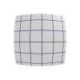

DistortionIn the real world, camera lenses cannot be perfect, and so introduce errors (aberrations) in the images they capture. One of the most noticeable errors, called distortion, causes the resulting image to be pulled in or pushed out, so that long straight lines become bowed.The Distortion shader applies a physically accurate camera lens distortion to an image. And because Distortion is a lens shader, it can create a severe distortion without causing the stretching problem associated similar post-rendering effects.
Pin Cushion controls whether the distortion is inward. Barrel controls whether the distortion is outward. Barrel is the type of distortion most commonly associated with wide angle camera lenses.
 


Amount controls how much the image gets distorted. Small values will cause only a slight bending, larger values will cause greater bending.

|